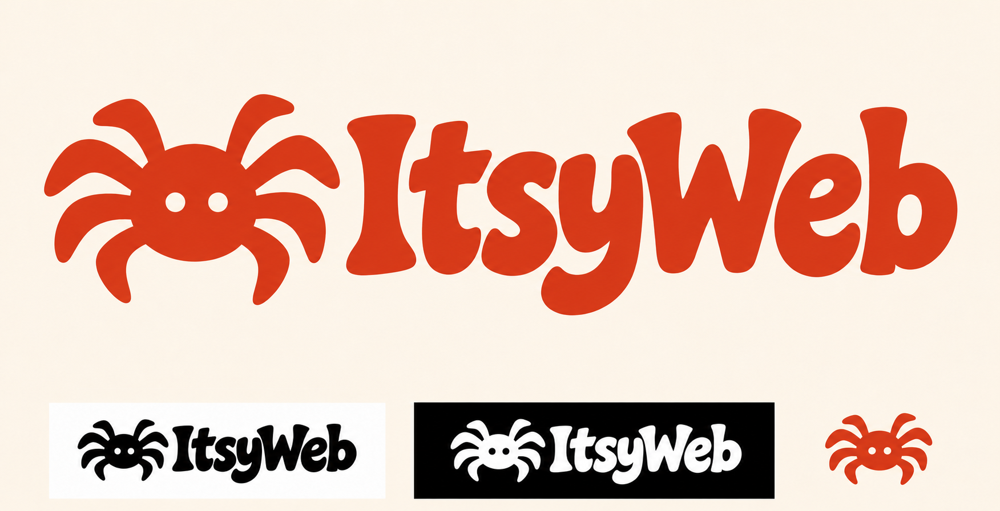
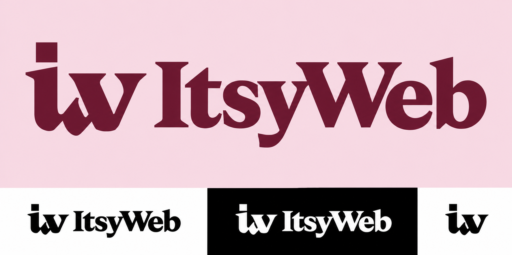
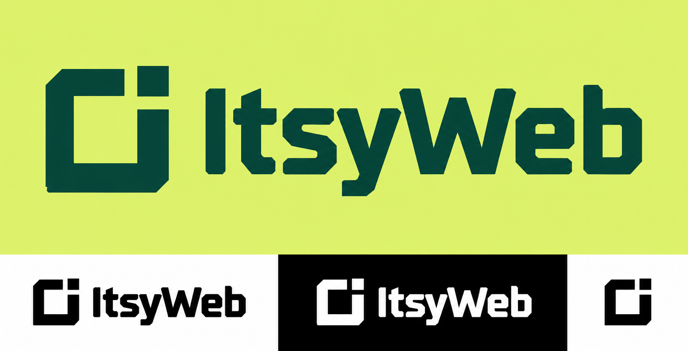
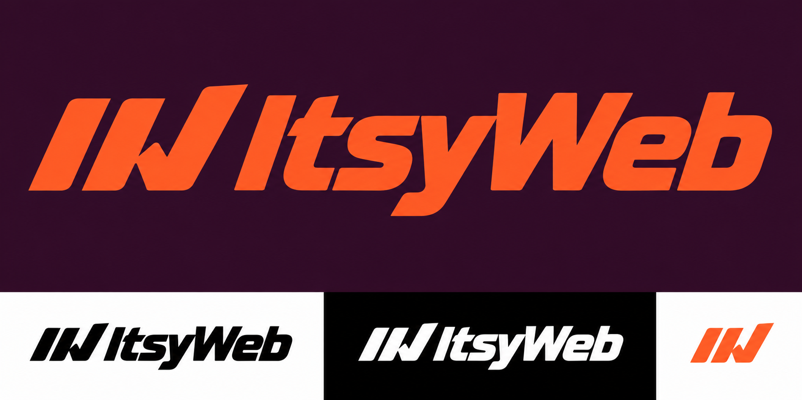
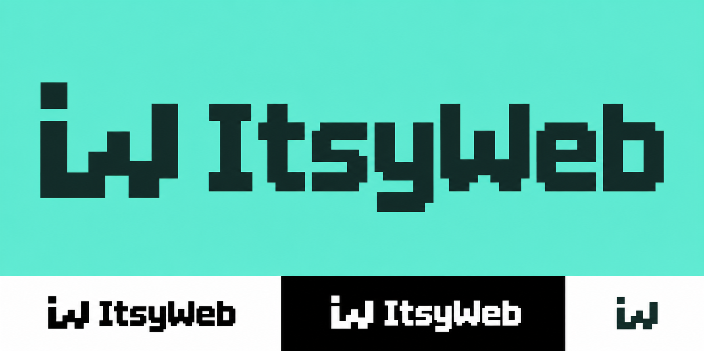

1. Little Weaver
Friendly software, with a face.
The eight-legged maker gives ItsyWeb a character people can recognise without the name. The lettering feels independent and approachable.
Tradeoff: A playful mascot can feel less technical.

2. Printer’s Device
A signature for the person making the web.
The iw device and wedge-serif lettering move the brand toward publishing and authorship. Wine and rose give it a markedly different voice.
Tradeoff: Could feel more like publishing than software.

3. Open Frame
Small pieces. Clear structure.
An open frame and a detached square turn a page structure into a compact i. Pine and citron give the system confidence without familiar developer blue.
Tradeoff: Needs a distinctive silhouette to avoid generic geometry.

4. Quickstroke
A little tool with momentum.
A forward-cut W and slanted lettering make the identity active and assertive. Orange on plum gives it an immediately different presence.
Tradeoff: The motion language may suggest a sports brand.

5. Small Assembly
Built a bit at a time.
An integer-grid iw and stepped lettering connect to the independent web. Turquoise keeps the bitmap logic fresh and readable.
Tradeoff: Bitmap styling could feel like retro novelty.